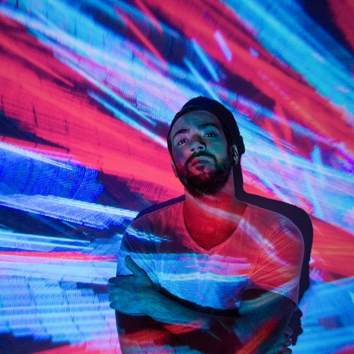

Bienvenidxs a la página oficial de Constelación, banda de rock y pop que reune las canciones de Fer Chavix, Lihue Carnovali, Juan De Gaudio y Gonza Bozzoni Oriundos de la Zona Oeste de Buenos Aires los musicos de constelacion inicialmente son compositores solistas que colaboraban entre ellos para impulsar sus carreras, era cuestion de tiempo para tomar la iniciativa y salir siempre a tocar todos juntos como banda bajo un mismo nombre, y esto es posible ya que a pesar de sus particularidades, los estilos de cada musico coexisten armoniosamente